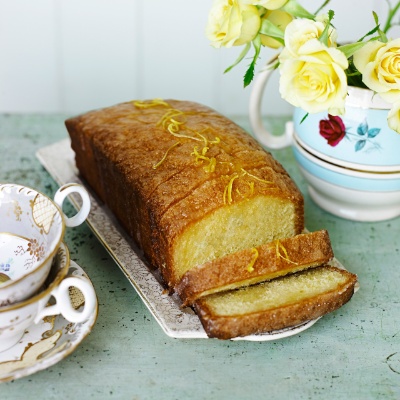

Lemon Drizzle Cake

Description
This lemon drizzle cake is my take on Mary Berry’s recipe,
one of the tastiest and easiest cakes ever. This is a great
recipe for someone who doesn’t like too many steps.
Ingredients
- 1 cup white sugar
- 2 lemons, zested
- 2 1/4 cups self raising flour (see Note)
- 1/2 teaspoon baking powder
- 1/4 teaspoon fine salt
- 1 cup (2 sticks) unsalted butter, room temperature
- 4 large eggs
- 1/4 cup milk
- 3/4 cup granulated sugar
- 1/3 cup fresh lemon juice
Steps
- Add sugar to a mixing bowl and grate in lemon zest.
Stir and let sit for 1 hour if possible to intensify
the lemon flavor. This step can be skipped if necessary.
-
Preheat the oven to 350 degrees F (175 degrees C).
Line a loaf pan with greased parchment paper.
-
Combine flour, baking powder, and salt in a small bowl;
add to lemon sugar. Add butter, eggs, and milk and beat
with an electric mixer until batter is smooth and fluffy.
Transfer batter into the prepared loaf pan and smooth out the top.
-
Bake in the preheated oven until a toothpick inserted into the center
comes out clean, about 50 minutes. Remove from oven and let cool for 5 minutes.
-
Meanwhile for lemon drizzle topping whisk sugar and lemon juice
together in a bowl until smooth.
-
Poke holes all over the cake with a skewer, and ladle or pour
lemon drizzle topping over the top. Let the cake cool all the
way to room temperature before removing it from the pan.